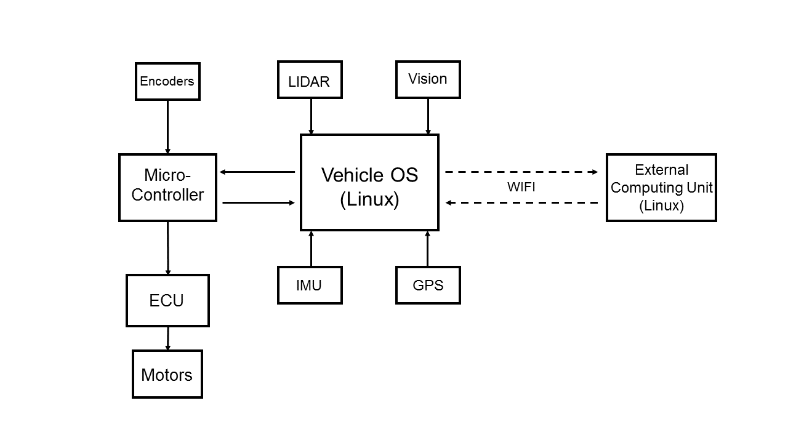
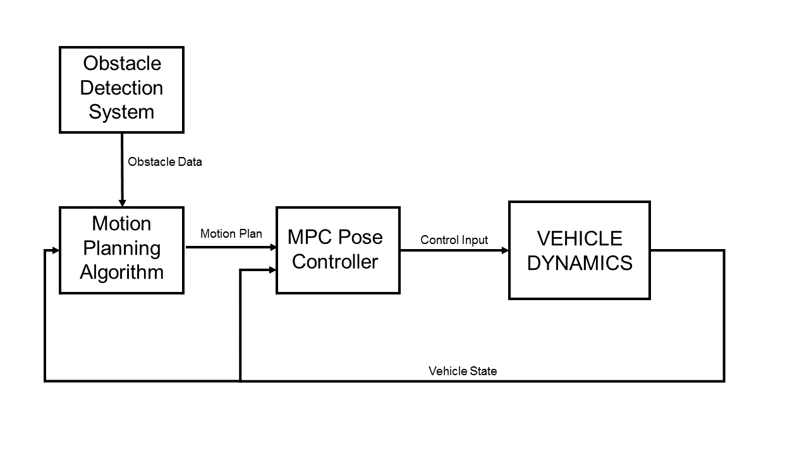

Research Purpose
Goldeneye is currently focused on robotics research in autonomous driving. Sponsored by Aptiv Automotive, we are currently pursuing research in predictive driving. Predictive driving not only involves detecting obstructions and other drivers on the road, but it also means that we generate some expectations of how other road users are going to act. Once a prediction of another driver's behavior has been formed, an agent can act upon it proactively, with more natural and safe behavior as a result.
Using the
Berkeley Autonomous Race Car (BARC) project developed in Professor Francesco Borrelli’s
Model Predictive Control Lab , these 1/10 scale model electric cars allow us to rapidly develop and test autonomous driving technology, without the having to purchase and setup a testing track with real cars. We have expanded the BARC sensor suite to include LiDar and high resolution cameras, and are able to stream data to an external computing unit for additional offboard computation in real time.
Vehicle Architecture
At the moment we are working with two 1/10 scale Ford Fiesta ST RC cars with top speeds of up to 35 mph. They have been modified to implement the BARC architecture. Each car is equipped with a Ubuntu 64bit Linux computer on board as the main computing unit, running the Robotic Operating System. A microcontroller acts as the interface between the Ubuntu OS and the RC car’s ECU (Engine Control Unit), which controls the vehicles motors and servos. Additionally, the microcontroller passes all encoder readings to the OS, as it is the only PWM supporting interface on the vehicle. The Inertial Measurement Unit (IMU), GPS system, Lidar sensor, and High Resolution Machine Vision camera are directly connected to the OS running ROS.
Additionally, The vehicle creates its own Wi-Fi network and is able to connect to an external computing unit for off board computation. The system is configured such that the vehicle can send sensor feeds through Wi-Fi to the external computers, where the data can be processed. The result is then sent back to the vehicle in real time, where the algorithms running on the car can use the result in real time. Additionally, the system can be configured such that all computation is done on the external computers sensor feeds are streamed up from the car, and all motor commands are directly sent down to the vehicle.

A sample of current work:
Lane Keeping:
To demonstrate the effectiveness of our current system architecture we have set up a straightforward lane keeping system. A state feedback controller is used to keep the vehicle in a lane, while the forward velocity of the vehicle is set to a desired constant. The image feed from the camera goes through pre- processing and is sent to the off board computer, where an algorithm classifies and detects the lane. The result is sent back to the vehicle so the controller can keep the distance from the center of the lane small. Notice how the vehicle slows down to make sharp corners, and speeds up in the straight sections.
Sensor Fusion and Object Detection:
For our vehicles to be able to act and react based on the other vehicle's motion, it is insufficient to exclusively detect other vehicles using vision data. It is also necessary to generate an accurate estimate of the relative position and orientation of other vehicles. Vision data is useful as it can very accurately detect and classify objects, but a single camera gives no depth information. Lidar data on the other hand outputs a highly accurate point cloud, but oftentimes lacks the resolution and coloring to properly distinguish different objects.
The solution to these problems is to combine (or “fuse”) our sensor feeds to provide an accurate estimate of the position of other vehicles, capitalizing on the respective strengths of each of the datatypes.
We have built robust object detection schemes, that can accurately bound an object in a frame. Given this information, our problem becomes the following:
“Given the pixel bounds of an object in a vision frame associated with a Lidar point cloud, find the points in the point cloud associated with the object.”
A strong approach is to train a neural network to make the association from object bounds and a Lidar point cloud to a relative vehicle position and pose. Training data and ground truth relative position data is obtained by driving two cars around within each other’s field of view. Aside from continuously recording the Lidar and camera data from both cars, the indoor GPS data, accurate up to a centimeter, is logged as well. The GPS data of both cars can be referenced at the training time to generate ground truth relative coordinates.
It is important to note here that while GPS already gives us the relative position of other vehicles, this data is generally not accessible in real life scenarios. This project is important in the framework of decentralized control, where no knowledge about any of the other agents is assumed or given.
Motion Planning, Obstacle Avoidance,
Vehicle Control and Simulation
Current work has focused on the creation of several general purpose controllers to accomplish simple tasks, that may be used simultaneously to accomplish more complicated goals. Among these, controllers have been implemented to control the steering angle of the wheels, to set the longitudinal velocity of the vehicle, and to control the orientation and lateral position of the vehicle, using classical control methods such as state feedback and pole placement.
More complicated control problems have been solved using more involved approaches. An interesting example is the problem of navigating a vehicle from a starting position to a pre-defined target position through a field of obstacles. The task is solved by splitting it up into subtasks and designing controllers and algorithms to handle each of them separately.
Consider first the problem of navigating the vehicle between two points without any obstructions. This problem is difficult for classical controllers such as state feedback, PID, or LQR controllers, for a variety of reasons. [see footnote] Instead, a model predictive control (MPC) approach is taken in this instance. MPC relies on an approximate model of the vehicle’s behavior. At each iteration, MPC controllers try to optimize a well defined cost function based on the state of the system, by tuning the control inputs to the system over a finite, receding prediction horizon. The dynamic model provides a means of predicting future states based on the starting state and the control inputs. Other constraints can be provided to guarantee feasibility of the solution. The optimization problem can be solved rapidly in practice by specifying the cost function to be convex, or by generating a finite amount of reference trajectories and executing the optimal one. The latter approach is chosen in the following simulations.
In the following simulations, a commonly used nonlinear vehicle dynamics model known as the bicycle model is used to simulate the vehicle. The vehicle speed is kept constant, and the MPC controller decides what steering input to give the vehicle based on a linearized model in the local coordinate frame. Trajectories are generated with the maximum turning angle of the wheels as a limiting constraint, after which the trajectory minimizing the distance to the target is chosen. This controller can be passed target positions dynamically, as the optimization problem that is solved at each timestep is independent of the problems solved previously.
A motion plan that avoids obstacles is typically found by means of a graph search over a feasible region. In many cases this requires discretizing the search space and representing the path by graph vertices associated with points in space. In this context, finding a motion plan means finding a series of safe points to travel through. It is useful then, to use the MPC point to point controller to guide the actual vehicle through these points once they have been found, as we can guarantee beforehand that the MPC will not run into any obstacles.
Common algorithms to find a path in a graph in the context of motion planning, such as A* and RRT (or variations of RRT like CC-RRT*), are based on an abstract case where the motion is not subject to constraints, and are modified to account for reality. In this instance, a different approach is taken, where a search tree is built based on the constraints of motion (current position and heading as root), and an optimal path is found based on a target distance heuristic. Assuming the wheels of the vehicle are rolling without slipping, the range of motion of the vehicle is limited by its maximum turning circle. Adding the constraint that some distance must be kept from all obstacles this provides a sufficient framework to create a motion plan for the case where all obstacles are stationary.
As such the current architecture of the motion planning system contains an algorithm that detects and locates obstacles around the course. This information is fed to the motion planner, which plans a trajectory for the vehicle to follow, and dynamically sends target positions to the MPC point to point controller to guide the vehicle along this path. It is notable that currently, a path is found by the motion planner before the start of the motion, and after motion has been initiated, the planning algorithm decides what targets to feed to the MPC controller, which acts on the short term horizon. This is sufficient to guarantee a solution to the problem, but in the event that a new obstacle is detected, the motion planner can re-plan the motion from the vehicle’s current position and adapt to changing conditions. Other common approaches to this problem include an MPC design over a prediction horizon of longer duration than the anticipated travel time, and learning based approaches. These are currently being investigated for other projects in predictive driving.

[footnote]
This is because the dynamics of a vehicle are highly nonlinear. Jacobian Linearizations of dynamics models on which these controllers rely are only accurate around the equilibrium point of linearization and are wildly inaccurate at describing motion in systems with rotating coordinates. Additionally, navigating a car between points sometimes involves more than “steering in the right direction,” which is a behavior that is difficult to achieve with these methods. Finally, the control of a vehicle is subject to many constraints, that can only be implicitly enforced for these methods by tuning control constants and cost functions.